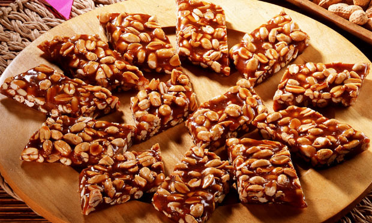

Pé de Moleque

Ingredientes
- 1 xícara (chá) de Água;
- 2 xícaras (chá) de amendoim torrado e sem pele;
- 600 gramas de rapadura;
- manteiga para untar.
Modo de Preparo
Corte a rapadura em pedaços e coloque em uma panela grande com a água.
Leve ao fogo alto (200 ºC a 220 ºC), mexendo às vezes, até a rapadura derreter e começar a ferver.
Pare de mexer e continue cozinhando até atingir o ponto de bala dura.
Unte uma superfície lisa com manteiga.
Junte o amendoim e retire do fogo.
Mexa com uma colher de pau até a calda começar a engrossar e ficar opaca.
Despeje a mistura sobre a superfície untada e espalhe-a com uma espátula.
Quando começar a endurecer, corte o doce em retângulos.
Deixe esfriar e, depois, guarde em recipiente bem fechado.
Ficou delicioso!!!